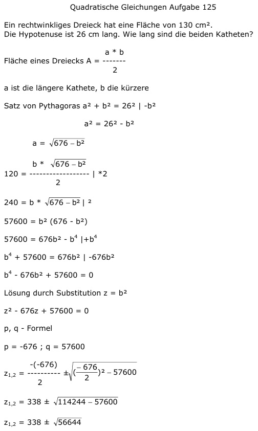
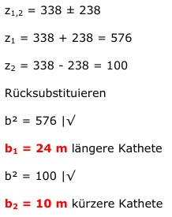

Aufgabe 125 Ein rechtwinkliges Dreieck hat eine Fläche von 130 cm2.Die Hypotenuse ist 26 cm lang. Wie lang sind die beiden Katheten? a * b Fläche eines Dreiecks A = ------- 2 a ist die längere Kathete, b die kürzere Satz von Pythagoras a2 + b2 = 262 |-b2 a2 = 262 - b2  57600 = b2 (676 - b2) 57600 = 676b2 - b4 |+b4 b4 + 57600 = 676b2 |-676b2 b4 - 676b2 + 57600 = 0 Lösung durch Substitution z = b2 z2 - 676z + 57600 = 0 p, q - Formel p = -676 ; q = 57600  z1,2 = 338 ± 238 z1 = 338 + 238 = 576 z2 = 338 - 238 = 100 Rücksubstituieren b2 = 576 |√ b1 = 24 m längere Kathete b2 = 100 |√ b2 = 10 m kürzere Kathete